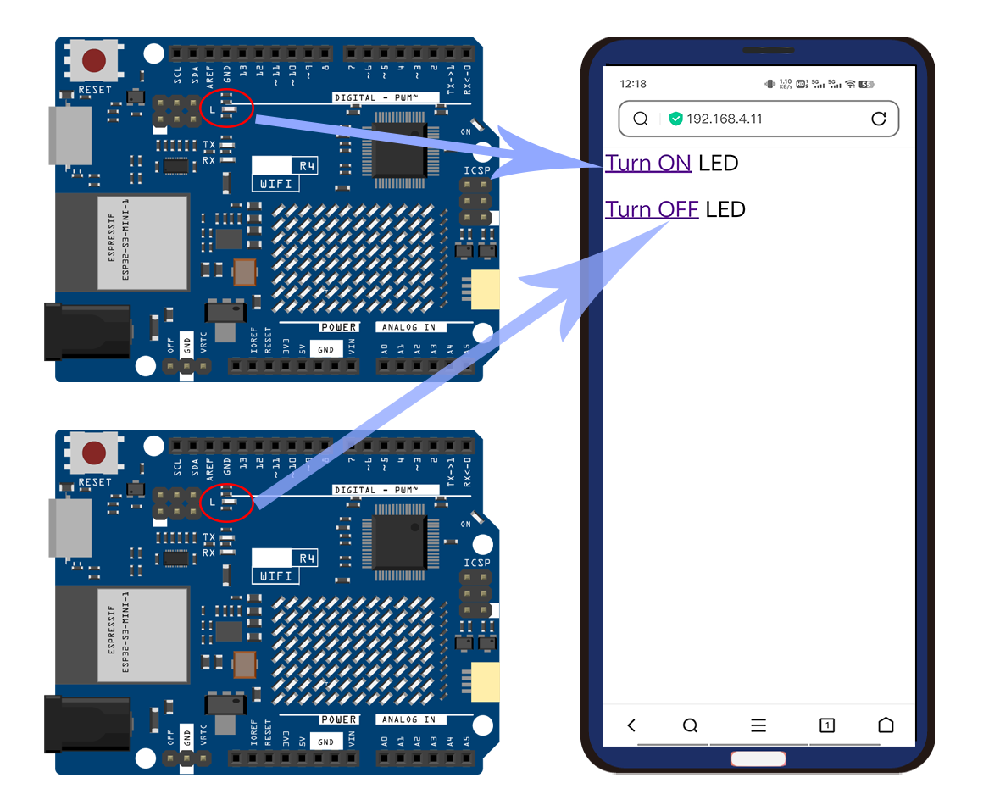

Web Control LED (WiFi Access Point)
This project allows you to control an LED light through a web interface. The Arduino board acts as a WiFi access point, creating its own local network that you can connect to with a web browser. Once connected, you can navigate to the device’s IP address using the web browser, where you’ll find options to turn an LED (connected to the board’s pin 13) on and off. The project provides real-time feedback on the LED status via the Serial Monitor, making it easier to debug and understand the flow of operations.
1. Upload the code
Open the 17_Web_Control_LED file under the path of Basic-Starter-Kit-for-Arduino-Uno-R4-WiFi-main\Code, or copy this code into Arduino IDE.
Note
Wi-Fi® support is enabled via the built-in WiFiS3 library that is shipped with the Arduino UNO R4 Core. Installing the core automatically installs the WiFiS3 library.
You still need to create or modify arduino_secrets.h, replace SECRET_SSID and SECRET_PASS with the name and password of your WiFi access point. The file should contain:
//arduino_secrets.h header file
#define SECRET_SSID "yournetwork"
#define SECRET_PASS "yourpassword"
Note: This is the SSID and Password you created for UNO R4 WIFI. It is not the SSID and Password of your home router’s WiFi access point.
{kind=link}
2. Code explanation
Importing Required Libraries
Importing the
WiFiS3library for WiFi functionalities andarduino_secrets.hfor sensitive data like passwords.#include "WiFiS3.h" #include "arduino_secrets.h"
Configuration and Variable Initialization
Define WiFi SSID, password, and key index along with the LED pin and WiFi status.
char ssid[] = SECRET_SSID; char pass[] = SECRET_PASS; int keyIndex = 0; int led = LED_BUILTIN; int status = WL_IDLE_STATUS; WiFiServer server(80);
setup()FunctionInitialize the serial communication and configure the WiFi module.
void setup() { // ... setup code ... // Create access point status = WiFi.beginAP(ssid, pass); // ... error handling ... // start the web server on port 80 server.begin(); }
We also check if the firmware version of uno R4 wifi is up to date. If it is not the latest version, a prompt for upgrade will be displayed. You can refer to update_firmware for firmware upgrade.
... String fv = WiFi.firmwareVersion(); if (fv < WIFI_FIRMWARE_LATEST_VERSION) { Serial.println("Please upgrade the firmware"); } ...You may want to modify the following code in order to be able to change the default IP of Arduino.
WiFi.config(IPAddress(192,168,4,11));
Main
loop()FunctionThe
loop()function in the Arduino code performs several key operations, specifically:Checking if a device has connected or disconnected from the access point.
Listening for incoming clients who make HTTP requests.
Reading client data and executing actions based on that data—like turning an LED on or off.
Here, let’s break down the
loop()function to make these steps more understandable.Checking WiFi Status
The code first checks if the WiFi status has changed. If a device has connected or disconnected, the serial monitor will display the information accordingly.
if (status != WiFi.status()) { status = WiFi.status(); if (status == WL_AP_CONNECTED) { Serial.println("Device connected to AP"); } else { Serial.println("Device disconnected from AP"); } }
Listening for Incoming Clients
WiFiClient client = server.available();waits for incoming clients.WiFiClient client = server.available();
Handling Client Requests
Listens for incoming clients and serves them the HTML web page. When a user clicks on the “Click here to turn the LED on” or “Click here to turn the LED off” links on the served webpage, an HTTP GET request is sent to the Arduino server. Specifically, the URLs “http://yourAddress/H” for turning on the LED and “http://yourAddress/L” for turning it off will be accessed.
WiFiClient client = server.available(); if (client) { // ... client.println("HTTP/1.1 200 OK"); client.println("Content-type:text/html"); client.println(); client.print("<p style=\"font-size:7vw;\">Click <a href=\"/H\">here</a> turn the LED on<br></p>"); client.print("<p style=\"font-size:7vw;\">Click <a href=\"/L\">here</a> turn the LED off<br></p>"); // ... }
The Arduino code listens for these incoming GET requests. When it detects
GET /Hat the end of an incoming line of text (HTTP header), it sets the LED connected to pin 13 to HIGH, effectively turning it on. Similarly, if it detectsGET /L, it sets the LED to LOW, turning it off.while (client.connected()) { // loop while the client's connected delayMicroseconds(10); // This is required for the Arduino Nano RP2040 Connect - otherwise it will loop so fast that SPI will never be served. if (client.available()) { // if there's bytes to read from the client, char c = client.read(); // read a byte, then Serial.write(c); // print it out to the serial monitor if (c == '\n') { // if the byte is a newline character ... } else { // if you got a newline, then clear currentLine: currentLine = ""; } } else if (c != '\r') { // if you got anything else but a carriage return character, currentLine += c; // add it to the end of the currentLine } // Check to see if the client request was "GET /H" or "GET /L": if (currentLine.endsWith("GET /H")) { digitalWrite(led, HIGH); // GET /H turns the LED on } if (currentLine.endsWith("GET /L")) { digitalWrite(led, LOW); // GET /L turns the LED off } }
Reference